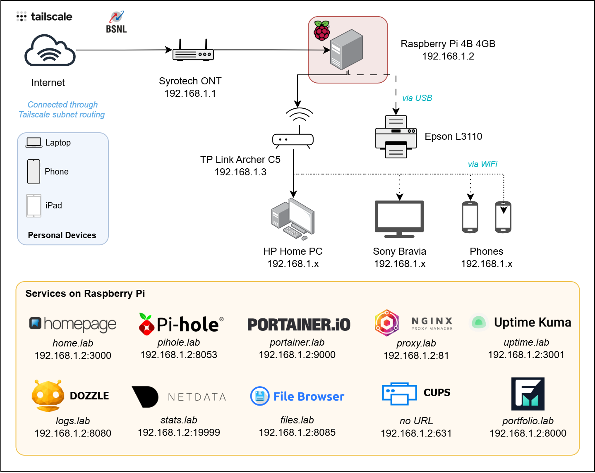

Home lab
HomeLab @ Jamshedpur
Notes on the Raspberry Pi 4 I run at home.

A Bit of History
I first came across the term Homelab through Reddit's r/homelab subreddit sometime in 2020. I was still in college back then didn't have the funds to get anything. RasperryPi was on my bucket list for quite sometime and although back then it was quite cheap (Rs.4k) compared to the atrocious pricing of the current times, I couldn't afford one.
My first job started a bit late in September 2020 due to the pandemic and I had spent the first few months spending. On family and myself - as we all should with our first job. The independence was thrilling.
By the time I actually wanted to buy a Pi in 2021, scalpers had made sure they weren't easy to get. Fast forward to mid-2022, and I finally got one: Raspberry Pi 4 Model B, 4GB RAM. Felt like a steal even then at ~5.5k, plus another 2k in peripherals. First service I ran on it was Pi-hole. I just wanted to block ads and trackers across my devices.
I slowly added Nginx Proxy Manager, Portainer, and wrote the setup scripts by own. Took me quite some frustrating nights but self hosting services was genuinely awesome! Scrolling through r/homelab, I dreamt of running multiple services, mini PCs, NAS, building my own little ecosystem. Back then it felt like a distant dream.
Now
Cutting to 2026, with the LLMs powering and improving a lot (at the same time making consumer devices out of reach due to pricing and greed), I updated my setup. The hardware remains the same but I added some new services which I describe below. This time, I used Claude to generate setup scripts, create the schedulers. Much easier and less messy. Debugging also simplified.
Right now, all my services and devices are accessible using Tailscale's subnet routing so I can print, access, and debug from anywhere. I needed this since while I am in Bangalore now, I wanted a way to make better use of the server back in Jamshedpur.
What's running on it
Homepage
The homepage of the setup. Can access everything from here. All services have their links here. Each service can be accessed using a unique subdomain.
Pi-hole
Network-wide ad and tracker blocking, as the DNS for every device on the network. Also, using this with NPM to create and route the custom subdomains.
Portainer
A GUI for Docker. Simple, easy to manage the containers and the images. Removed the hassles from updating.
Nginx Proxy Manager
Reverse proxy in front of everything, so each service gets its own subdomain (and making it easier to remember) instead of a port number.
Uptime Kuma
Checking the uptime status of the services. Not used much since it is only me and my parents who use the server but it is cool.
Dozzle
For accessing logs of Docker. Much better than Portainer, much easier to get the one time passwords.
Netdata
Lots of data collected. CPU, RAM, Temperature, Network. Everything. It is a lot.
File Browser
Simple file browser to access the files on the server. Since my Pi is running headless, this is a life saver.
CUPS Service
Remote printing service for my Epson L3110. Connected it and made the printer a network wide printer. After Pi-Hole, the second best thing on my Homelab.
Folioman
Mutual Fund portfolio tracker. I gave up on apps and started doing direct investments from AMC sites I missed the ease of tracking. This solved the problem albeit with a few gaps.
Tailscale
A private mesh network back to the Pi, with subnet routing and split DNS so home services can be accessed securely from anywhere. My personal favourite.

What's the Issue?
Docker port bindings! Containers would occasionally come up on the wrong ports after a reboot, fighting each other for the same port. Fixed by giving explicit port bindings per service and giving each container a static entry in the compose file.
Find more details on the scripts and how the entire setup works here - Link
What's Next?
Homelabbing is expensive and getting hardware is most of the time out of budget. But, slowly someday...
- Upgrade. Have a Mini PC with a better CPU, bigger RAM, and greater & faster SSD storage.
- More Services. Want to run Immich (photo storage) some day.
- New Things. Get a NAS running. Perhaps the most expensive of the lot.
- Fun! Homelab is supposed to be fun. Want to build things, tweak them, break them, and fix them again.